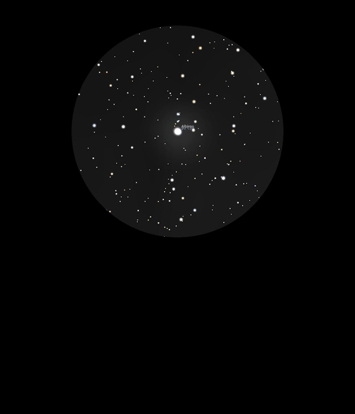

Albireo
Double Star in Cygnus
HIP 95947A
Mag 3.2
Beta Cygni, 6 Cyg A
22/08/16
A beautiful double star with an amazing colour contrast between
the yellow primary at Mag 3.2 and its Mag 5.5 companion, a
beautiful blue white
Astronomy Now's object of the month, and as they say a true
delight